Four working concepts, all using the real <bezel-device> component. Screenshots are below; "Open live" runs each page on the local dev server (http://localhost:8766). You can also mix them, e.g. "B's story with C's code editor".
Calm utility like remove.bg or Squoosh. Drop one screenshot and it's framed on five devices at once. Every frame explains its decision and shows a small "typical mockup" thumbnail of what other kits would do.
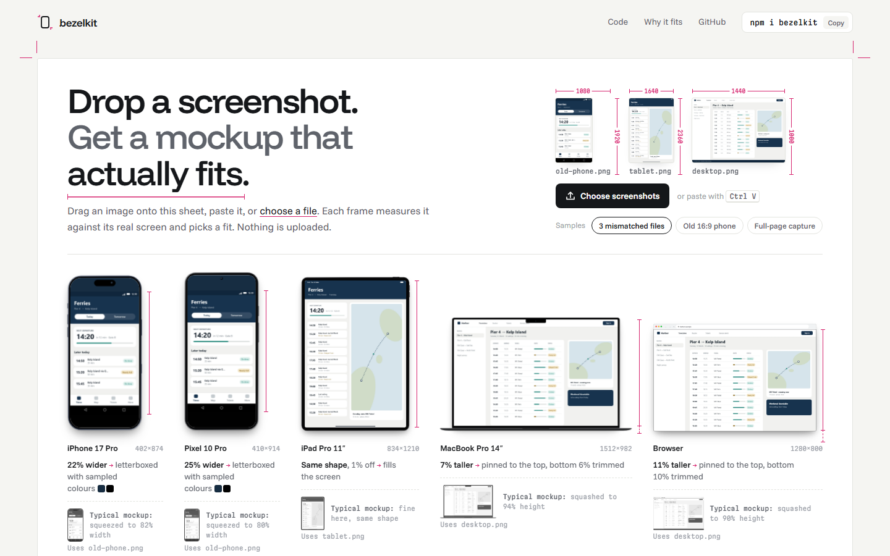
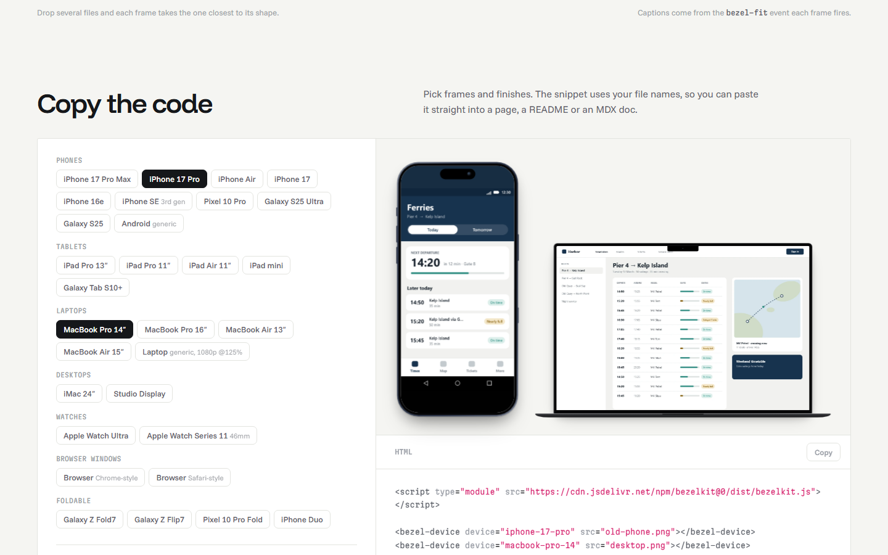
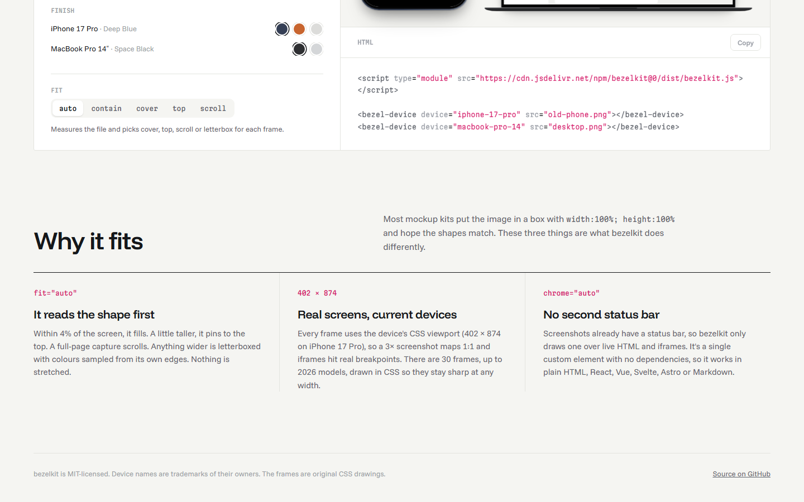
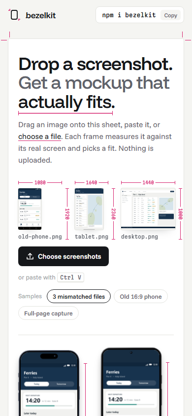
A dark, cinematic, scroll-driven story. One screenshot breaks in four labelled ways (squashed, doubled status bar, sliced, covered by the notch), then snaps into the real frame. After that come the device lineup, a flip to the back, a front+back product shot, the code and a drop-your-own call to action.
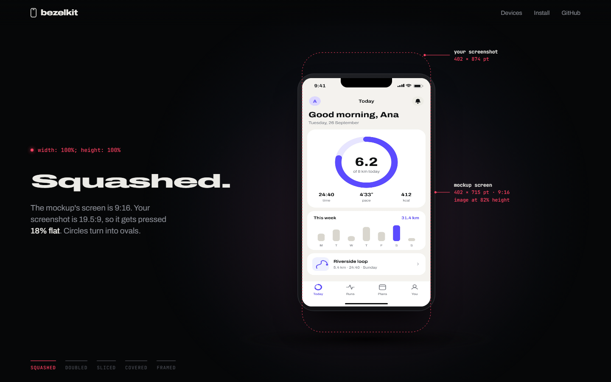
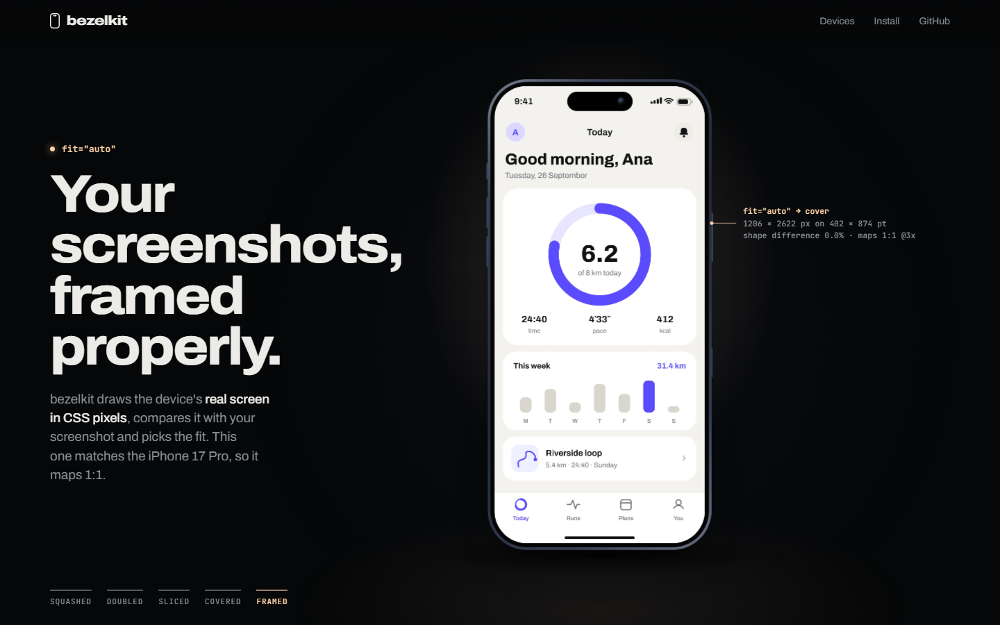
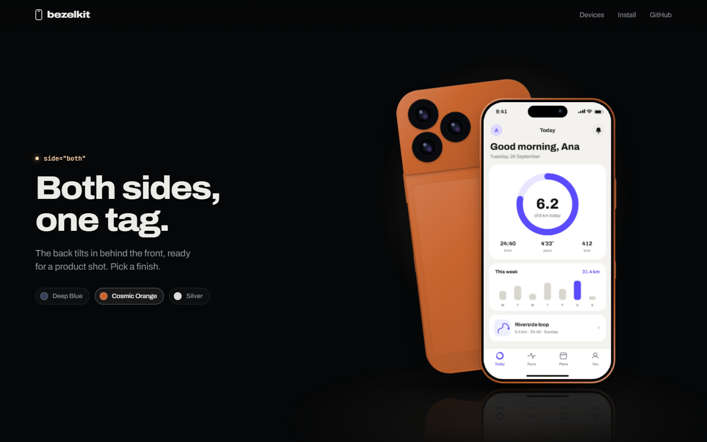
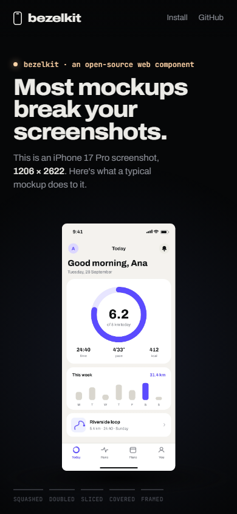
Developer-first, like shadcn/ui or Stripe docs. Edit the tag in a code editor, or click chips, and the device updates live with dimension lines. A "fails gallery" has five cards; each toggles from the typical broken result to bezelkit and shows a diff of the one attribute that changed.
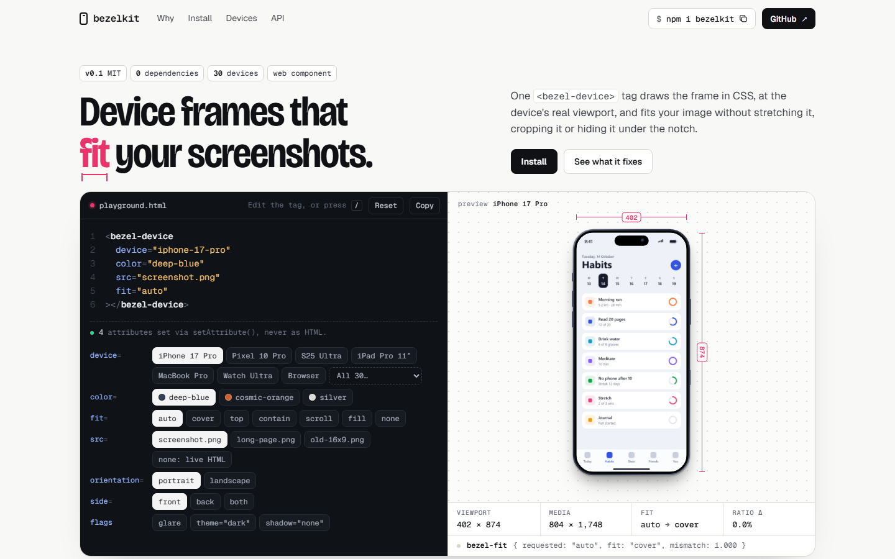
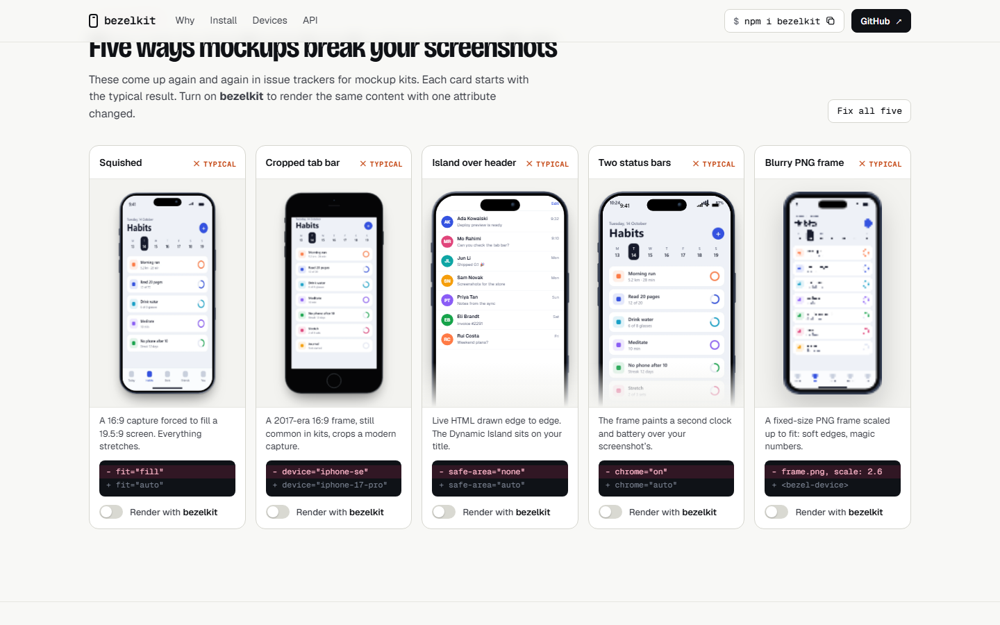
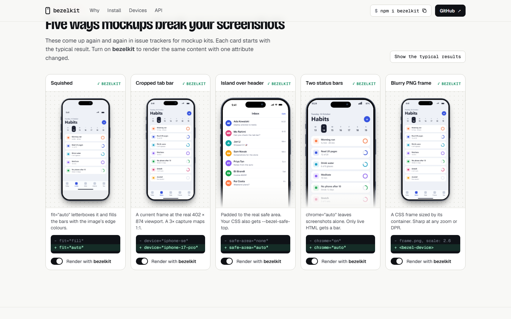
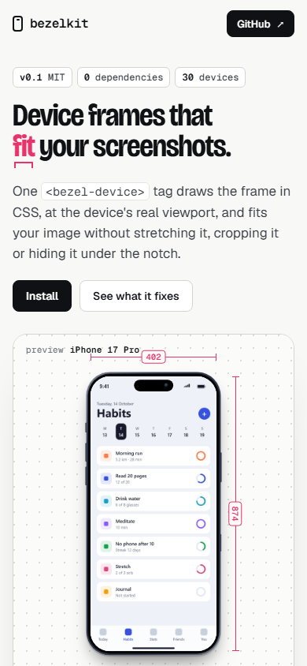
Bright and tactile. Seven draggable devices sit on a cutting mat, each with a sticky note explaining its fit. Drop a screenshot and it lands on all of them. A "reject pile" of broken mockups can be dragged onto a device to fix it. There are palette swatches and flip on double-click.
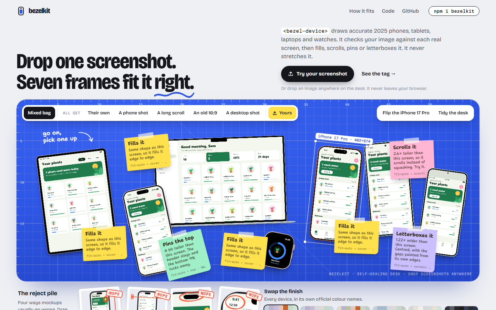
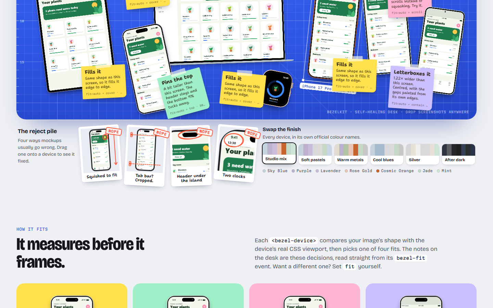
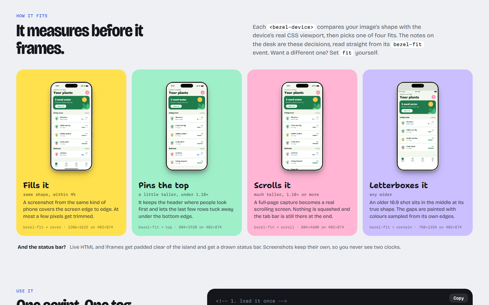
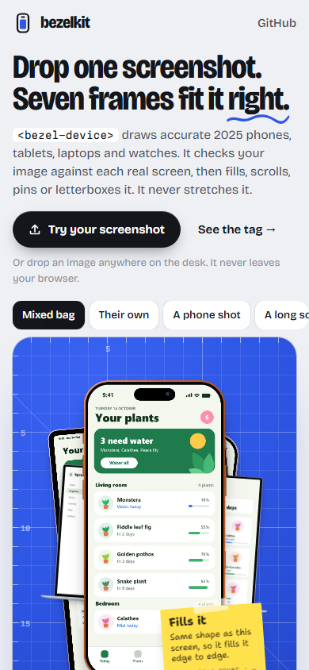
Open on B's "your screenshot breaks four ways → snaps into place" as the hero, since it's the clearest statement of the problem. Then go straight into C's live editor and fails gallery, which convert the people who'll install it. Borrow A's "drop your own" as a button inside the editor. D is the most fun but the hardest to keep readable; its desk could be a later "Studio" page.